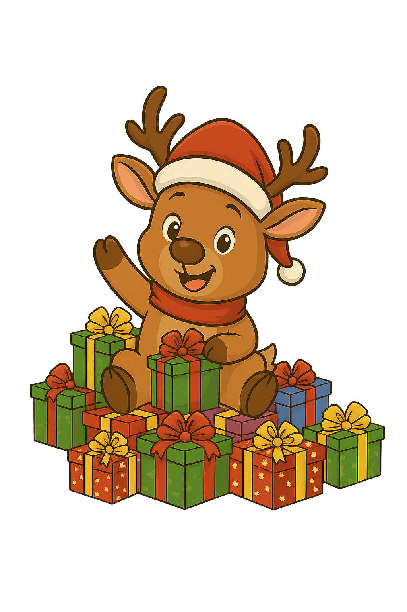
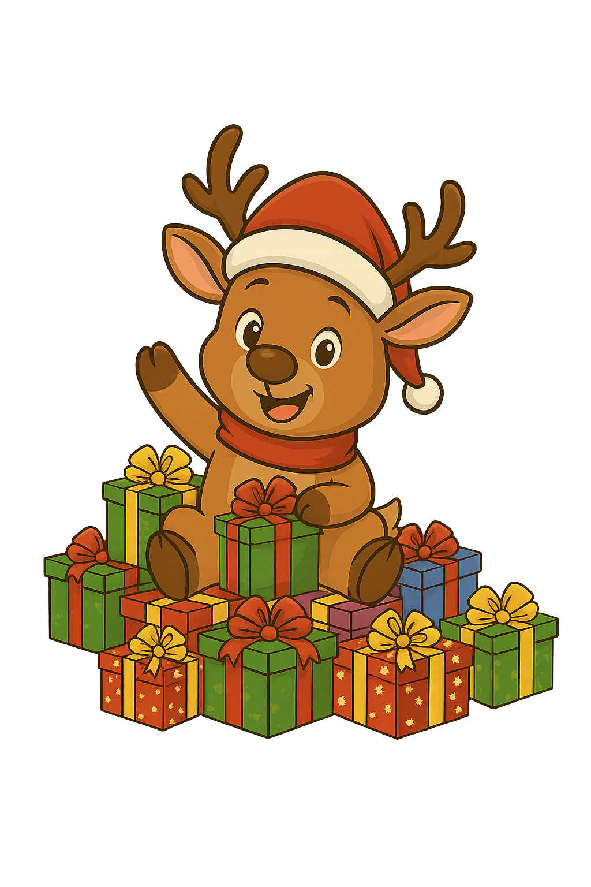

Sonhos Realizados
Conheça as histórias de crianças que tiveram seus sonhos de Natal realizados

O Sonho de Ana
Um dia de muita alegria
Ana tem 7 anos e mora com sua mãe e dois irmãos em uma comunidade carente. Desde muito pequena, seu maior sonho era ter uma boneca de verdade, daquelas que ela via nas vitrines das lojas quando passava pelo centro da cidade.
Quando nossa equipe do Natal Encantado recebeu a cartinha de Ana, ficamos emocionados com suas palavras simples e cheias de esperança. Ela escreveu: "Papai Noel, eu queria muito uma boneca para cuidar e dar amor, esse é um dos meus sonhos uma Boneca para que possa ser só minha, vou levar ela comigo aonde for cuidar dela como se fosse uma princesa da Disney."
No dia da entrega, os olhos de Ana brilharam como estrelas. Ela abraçou a boneca com tanto carinho que todos os voluntários presentes se emocionaram. Hoje, Ana cuida de sua boneca como se fosse uma filha de verdade, e sua mãe nos contou que ela dorme abraçada com ela todas as noites.

O Sonho de Enzo Gabriel
O brinquedo favorito chegou
Enzo Gabriel era um menino de 4 anos que sonhava em ganhar um presente muito especial neste final de ano. Com a ajuda da mamãe, ele escreveu uma cartinha pedindo uma bola bem colorida e a enviou para o Projeto Natal Encantado. Na noite de Natal, o coraçãozinho de Enzo batia forte, cheio de esperança e imaginando se o seu desenho tinha chegado às mãos certas.
Quando chegou a manhã de Natal, Enzo correu para a sala e seus olhinhos brilharam ao ver um pacote embrulhado com fitas coloridas esperando por ele. Com as mãozinhas ansiosas e felizes, ele rasgou o papel e deu um grito de alegria: era uma bola incrível, ainda mais bonita do que a que ele tinha imaginado! Ela era perfeita para chutar, rolar e pular, um presente escolhido com muito carinho por um voluntário que queria ver o Enzo sorrindo.
O restante do dia foi pura diversão, com Enzo Gabriel correndo pelo quintal e fazendo muitos "gols" com sua nova companheira de aventuras. Aquele brinquedo não era apenas uma bola, mas a prova de que a magia do Natal existe e que o amor pode viajar através de uma simples cartinha. Ao abraçar sua bola nova antes de dormir, Enzo teve a certeza de que aquele foi o Natal mais feliz de todos, fechando os olhos com a alegria de ter seu sonho realizado.

O Sonho de Miguel
Um sorriso que diz tudo
Miguel é um menino de 5 anos cheio de energia e imaginação. Ele mora em uma região humilde e sempre ficava encantado vendo os caminhões que passavam pela estrada perto de sua casa. Seu maior sonho era ter um caminhãozinho de brinquedo para poder criar suas próprias aventuras.
Em sua cartinha, com a ajuda de sua avó que escreveu para ele, Miguel pediu um caminhão amarelo "igual aos de verdade, sou viciado em ver filmes e vídeos de caminhão e caminhoneiros, meu sonho mesmo é colecionar vários caminhões desse e futuramente quero sair por ai com meu caminhão vermelho viajando pelo mundo a fora". Ele prometeu que ia cuidar muito bem do brinquedo e dividir com seus primos.
No dia da entrega, o sorriso de Miguel iluminou todo o ambiente. Ele ficou tão feliz que não largou o caminhão nem para comer! Sua avó nos contou, com lágrimas nos olhos, que nunca tinha visto o neto tão feliz. Miguel agora passa horas criando histórias e aventuras com seu caminhão, sonhando em um dia ser motorista de verdade.
 
